2005
정밀 레터마크 제정과 글로벌 스탠다드 동조화
삼성은 2005년 복잡한 타원형 내부 레이아웃을 생략하고 오직 문자로만 디자인의 세련됨과 정밀성을 구현하는 '레터마크(Lettermark)' 체계로의 대대적 수정을 감행했다.
사람의 망막과 시신경이 비주얼 신호를 왜곡 없이 인식하는 인지 공학적 법칙을 분석했다.
이에 기초하여 서체의 개별 높이, 좌우 자간(Kerning)을 고도로 조밀하게 압축하고, 문자의 획 두께를 미세 조정하여 시각적 안정성과 가독성을 정점으로 끌어올렸다.
레드마크 컬러
2005
정밀 레터마크 제정과 글로벌 스탠다드 동조화
삼성은 2005년 복잡한 타원형 내부 레이아웃을 생략하고 오직 문자로만 디자인의 세련됨과 정밀성을 구현하는 '레터마크(Lettermark)' 체계로의 대대적 수정을 감행했다.
사람의 망막과 시신경이 비주얼 신호를 왜곡 없이 인식하는 인지 공학적 법칙을 분석했다.
이에 기초하여 서체의 개별 높이, 좌우 자간(Kerning)을 고도로 조밀하게 압축하고, 문자의 획 두께를 미세 조정하여 시각적 안정성과 가독성을 정점으로 끌어올렸다.
레드마크 컬러
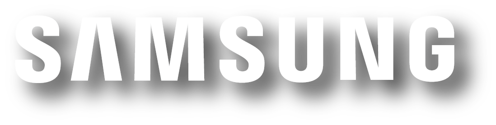

 2010
2010
-
2026
이재용 회장의 뉴삼성 비전,
초일류 브랜드 가치 수호와 AI 대중화 선도
2026년 현재 삼성은 단순히 최고의 가전 및 스마트폰 조립 제조사에 그치는 것이 아니라,
전 세계 온디바이스 AI 인프라 생태계를 전격 설계하고 지속 가능한 지구적 공존을 약속하는 지속 가능 지향적 미래 선구자로서의 비전을 시각적으로 견인하고 있다.
브랜드 가치 극대화와 글로벌 위상 수립
2025년 10월 인터브랜드가 발표한 '글로벌 100대 브랜드' 평가에서 삼성전자는 브랜드 가치 905억 달러를 인정받으며
아시아 대륙의 기업 중 유일무이하게 '세계 5위'의 높은 자리를 6년 연속 유지했다.
앞서 2024년 말 평가 당시에는 사상 처음으로 역사적인 브랜드 가치 1,000억 달러 장벽을 완전히 허물어뜨리는 기염을 토하기도 했다.
아울러 브랜드 파이낸스(Brand Finance)가 발표한 2025년 기준 한국 가치 브랜드 조사에서도 무려 124조 7,000억 원의 독보적인 자산 평가액을 기록하며
9년 연속 대한민국 최고 브랜드 타이틀을 전격 수호했다.
경영 전략적 기폭제와 핵심 성장동력
이와 같은 초일류 수준의 위상 수성은 AI 역량의 전폭적인 다변화 조치 및 철저하게 고객 만족에 초점을 맞춘
고객 중심적 비주얼 가치 마케팅 전략이 실효성 있게 맞아떨어진 결과이다. 삼성은 모바일, 가전, 첨단 파운드리 등 자사 핵심 파이프라인 전반에 걸쳐
"모두를 위한 AI(AI for All)" 및 "AI 대중화와 지속 가능한 친환경 혁신" 기치를 확고히 걸고 기술 대중화를 선도해 나가고 있다.
조직의 사법 리스크 극복과 뿌리 찾기 드라이브
이재용 삼성전자 회장은 오랜 사법 및 사외적 분쟁 국면 속에서 경영권 승계 의혹 1심 무죄 판결을 기점으로 사법 리스크를 상당 부분 걷어내는 데 성공했다.
이후 조직 안정화와 더불어 견고한 뉴삼성 신뢰도를 제고하기 위해
과거 '별표국수' 등 상징적 정체성의 뿌리를 수집 및 수호하는 문화 캠페인 조치를 다각도로 전개해 나가고 있다.
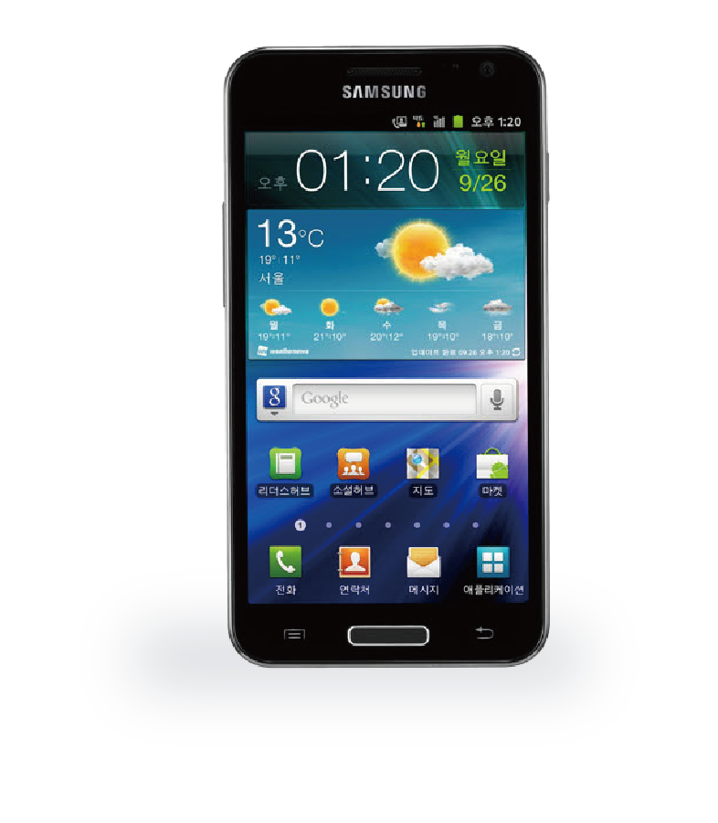
SAMSUNG S2
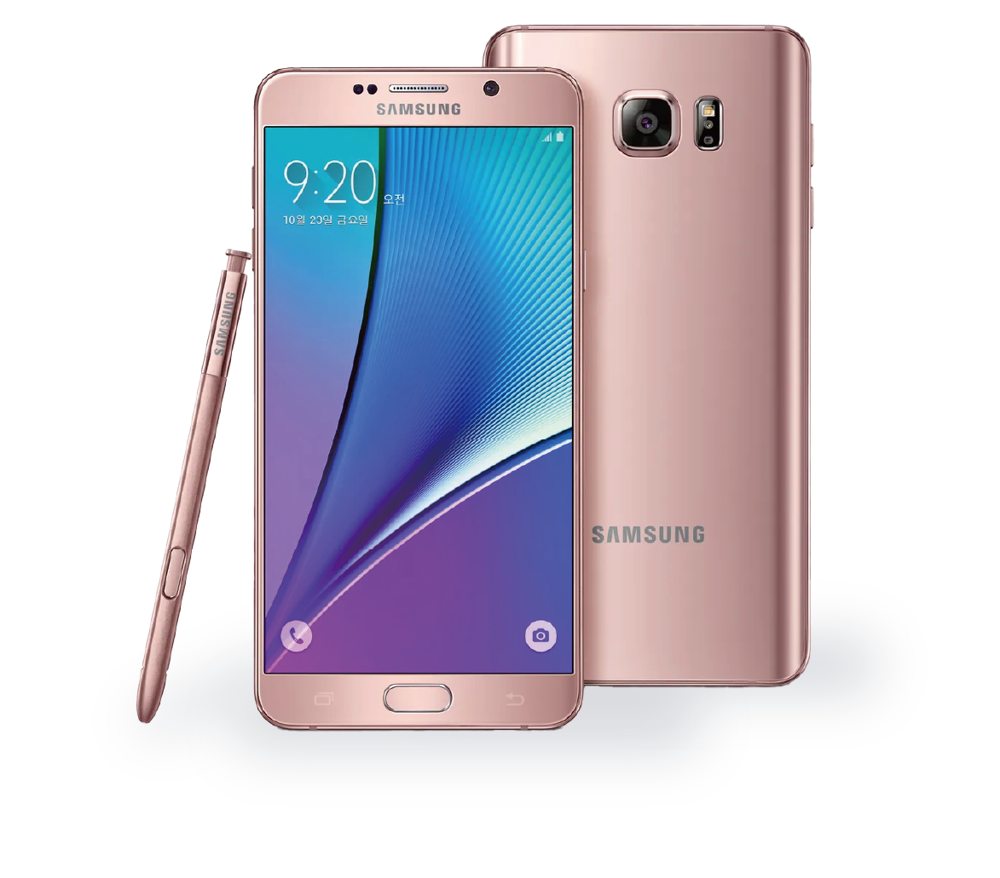
SAMSUNG NOTE5
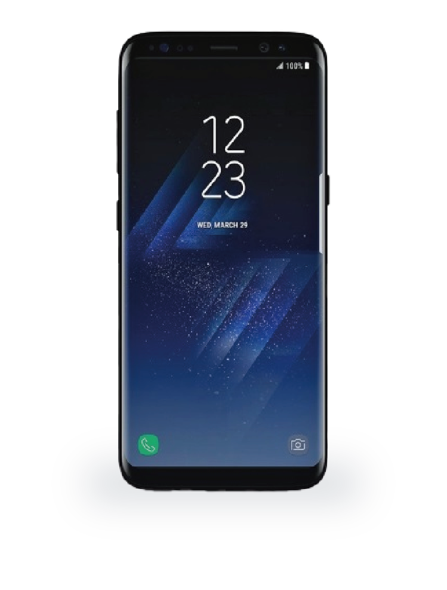
SAMSUNG S8
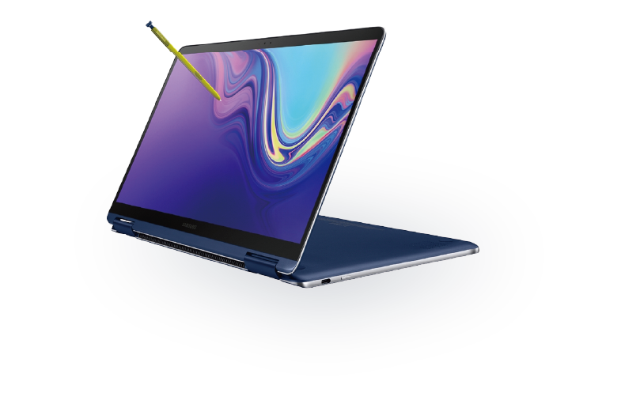
SAMSUNG 노트북 Pen S
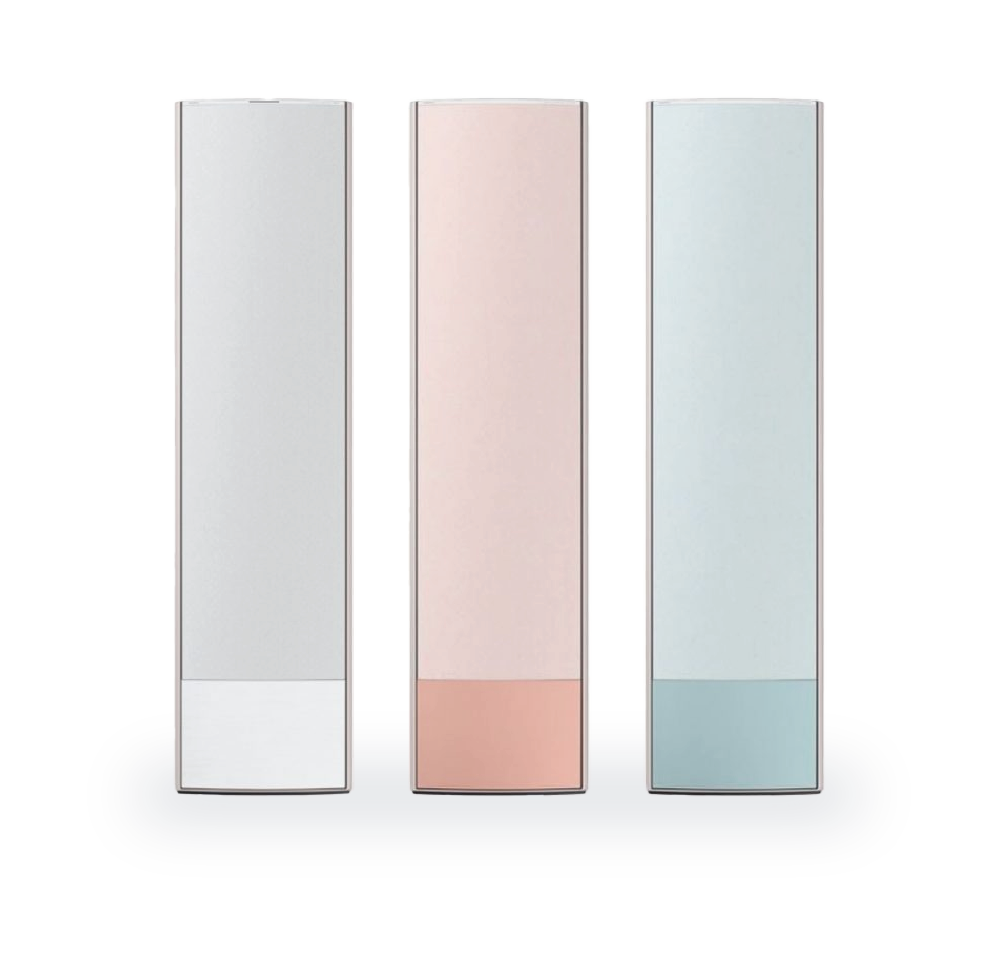
SAMSUNG 비스포크 무풍에어컨2022
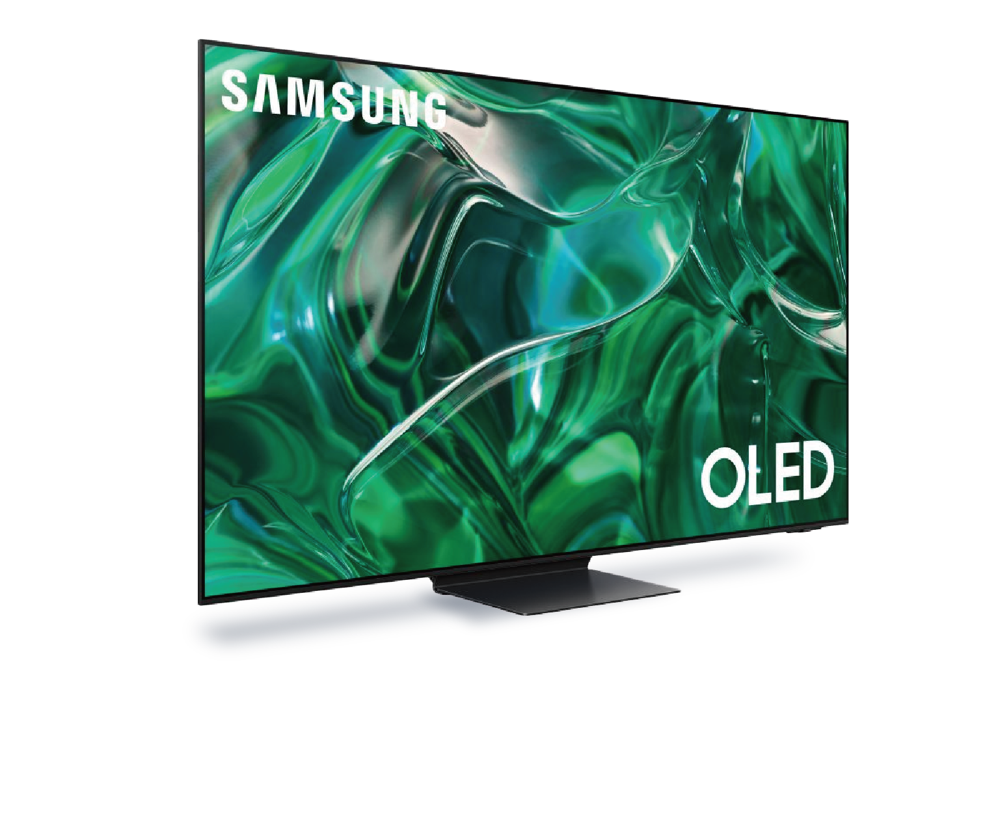
SAMSUNG OLED TV
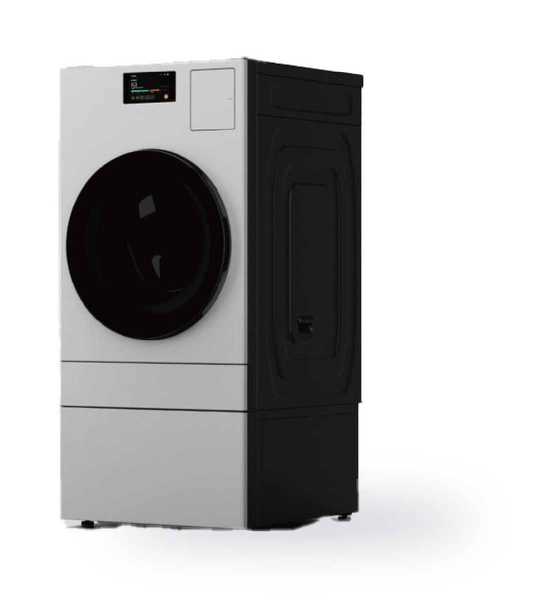
SAMSUNG IFA 2023
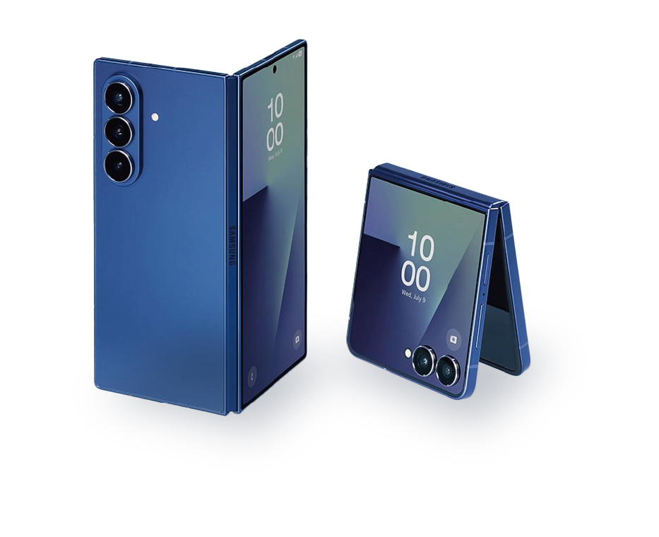
SAMSUNG Z폴드, 플립7
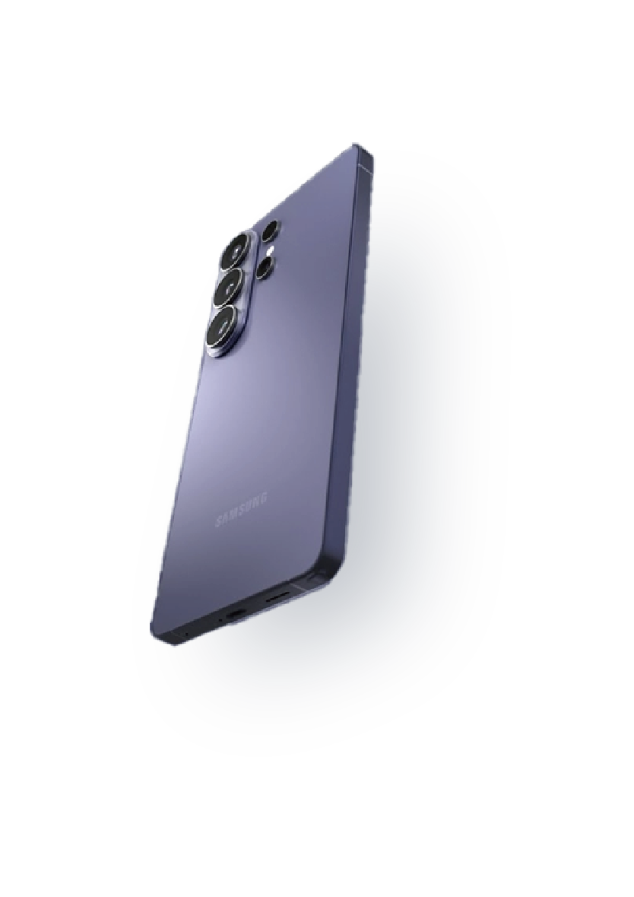
SAMSUNG S26
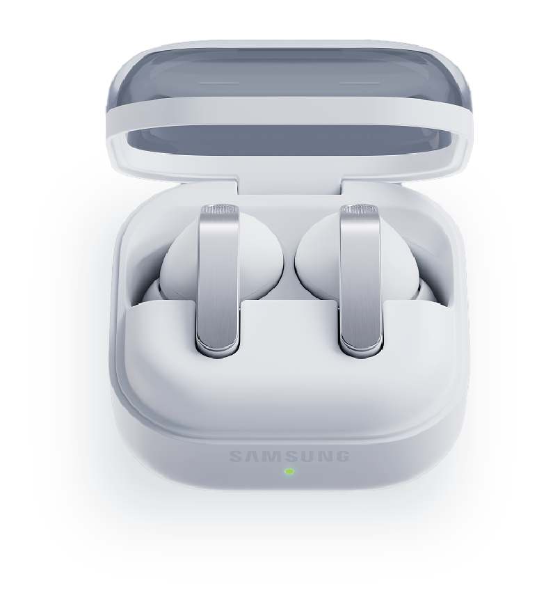
Galaxy Buds4